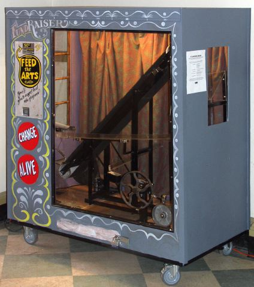
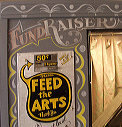

|
 |
 |
 |
COIN-OPERATED SCULPTURE RAISES MONEY FOR ARTS
Northampton, Mass. Feb 25, 2004
| Luke
Jaeger may have found the simplest
and most fun way yet to raise money for the arts. Jaeger, a sculptor and
filmmaker, has unveiled FUNDRAISER,
a handbuilt carnival midway attraction that takes quarters and keeps the
change for the use of local Massachusetts arts organizations. For 50 cents, deposited in any combination of coins, a user gets to see that change ride in an aluminum bucket up a black conveyor belt. The coins then fall into a clear plastic sorting device that causes them to roll either back to the original hopper, or down into a converted Spam can that, when it becomes heavy enough with contributions, prompts a hammer to strike a bell. Windows on three sides afford views of the Rube Goldberg-like action. The coin mechanism itself came from an old Coke machine. And FUNDRAISER contains gears from an exercise bike, a pulley wheel found in a barn, and of course, a Spam can.  According to Jaeger, the stuff he builds with, often collected by trash barrels and at dumps, is a whole new element for the periodic table. He calls it "obtainium," and his newest work positively glows with it. The high Victorian curtains that surround the machine were made by a local artist friend, and the lettering and design on the outside was done by Ashfield artist Amy Johnquest (best known for her work on a recent Bruce Springsteen tourbook), who specializes in carnival and side show settings. Carpentry, machining and welding were done by Jaeger and an assortment of gung-ho artists who donated their time in the service of kinetic art. Jaeger, a Northampton artist who teaches at Hampshire College and at Boston’s Massachusetts College of Art, agrees that a metaphor goes into motion — maybe a few of them — as those coins chug uphill. The bell doesn’t ring every time, for instance. "First of all," he said the other day, as a passerby tested his sculpture, "art isn’t always efficient." And it isn’t generally about big sums. "If you put two quarters into this machine, you’ve probably doubled your annual contribution to the arts as an American taxpayer," he said. "It adds up. It’s incremental." And in that, he saw another mechanized moral: "It takes more than one person’s effort to ring the bell — it’s a group effort." Seen another way, the sculpture pokes fun at the idea, held by many, that a reliable measure of an artwork’s worth is its ability to make money. Jaeger’s piece generates cash every time it’s touched.  The
machine, housed in a brightly painted box that looks
like it fell off the back of a carnie’s truck, is just the latest of this Northampton-based
artist’s eclectic works. Best known for his award-winning handmade animations,
which have been featured at national and international film fests like
Sundance, and at the Museum of Modern art, Jaeger has recently started
working big — really big — and creating machine art. FUNDRAISER is Jaeger’s
second coin-operated kinetic sculpture. The first, WAYBACK,
was displayed at the Revolving Museum in Lowell last
summer. A giant-sized version of a Victorian parlor toy,
it was supported by steel girders that looked like the
inside of a New York subway station. It took up an entire
room, and, in motion, showed an animation of a couple
dancing, to the tune of an old 33 rpm record, activated
by a metal box that looked like something between a jukebox
and a bus fare collector. The hand-welded seams and handmade
components of his work speak to the early origins of
machines. The
machine, housed in a brightly painted box that looks
like it fell off the back of a carnie’s truck, is just the latest of this Northampton-based
artist’s eclectic works. Best known for his award-winning handmade animations,
which have been featured at national and international film fests like
Sundance, and at the Museum of Modern art, Jaeger has recently started
working big — really big — and creating machine art. FUNDRAISER is Jaeger’s
second coin-operated kinetic sculpture. The first, WAYBACK,
was displayed at the Revolving Museum in Lowell last
summer. A giant-sized version of a Victorian parlor toy,
it was supported by steel girders that looked like the
inside of a New York subway station. It took up an entire
room, and, in motion, showed an animation of a couple
dancing, to the tune of an old 33 rpm record, activated
by a metal box that looked like something between a jukebox
and a bus fare collector. The hand-welded seams and handmade
components of his work speak to the early origins of
machines.FUNDRAISER was built in part with a small grant from the Northampton Arts Council, which had, a couple of years ago, lost two-thirds of its state funding. "I proposed this project as a way of actually making some money for them. It was a way for them to come out swinging," said Jaeger, whose work for the past decade has been funded by grants from the Arts Council, the Massachusetts Cultural Council, and many others. The Massachusetts Cultural Council singled out FUNDRAISER for Gold Star designation, an honor reserved for projects which "illustrate how culture contributes to the quality of life in cities and towns across the Commonwealth." Someday, Jaeger says, he’d like to curate an exhibit filled with coin-operated art pieces. FUNDRAISER will likely hit the road in good weather, rolling up to public events around Massachusetts, where it can offer a few joyful seconds of mechanical motion — and maybe even a beautiful ring of the turning-wheel bell inside — in exchange for hard currency for the arts. |
more
images
|
For further information, contact:
Bob
Cilman |
Northampton
Arts Council www.trickfilm.org |
413-587-1269 413-586-4654 |